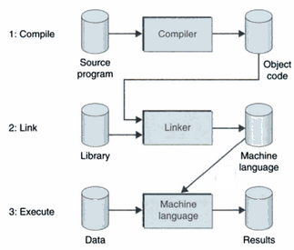

Librerie
Le librerie sono collezioni di codice oggetto precompilato relative a funzioni che possono essere riutilizzate. In questo modo non bisogna riscrivere ogni volta il codice di una data funzione da zero ma basta effettuare il linking della libreria in cui la funzione è presente con il codice oggetto del programma in cui viene utilizzata.
Il compilatore traduce il codice sorgente scritto nel linguaggio di alto livello, in un codice oggetto, in linguaggio macchina anche se non ancora esegubile. In una seconda fase il linker combina, il codice oggetto del programma con quello delle librerie in un codice macchina eseguibile.
Il nucleo di un linguaggio di programmazione è dato dalla libreria standard, una collezione di funzioni in grado di interfacciarsi con il sistema operativo per il quale è stato scritto compilatore. Generalmente le librerie vengono raccolte sotto '/usr/lib', '/usr/lib64'.
Librerie statiche e dinamiche
Il nome di una libreria inizia sempre con lib, a cui segue una parte indicante il tipo di libreria (es.c per la libreria standa, m per quella matematica). L'ultima parte del nome indica il tipo di libreria:
.a, per le librerie statiche
.so, (shared object) per le librerie dinamiche
Nel linking statico, il linker include tutte le funzioni della libreria statica al codice oggetto del programma. In questo modo viene prodotto un file a.out piuttosto grande. Nel linking dinamico, che utilizza le shared libraries, non vengono include le funzioni della libreria in a.out ma solo delle chiamate a tali funzioni. Quando si esegue un file a.out dinamicamente linkato, il sistema operativo carica in memoria sia a.out che la shared library e permettendo ad a.out di accedere al codice della libreria durante l'esecuzione. Il vantaggio principale di quest'utlima modalità è:
Riduzione delle dimensioni di a.out
Diversi programmi in esecuzione possono utilizzare la stessa libreria caricata in memoria.
Una modifica delle funzione della libreria dinamica non richiede la ricompilazione del file sorgente
Quando si usano le librerie è necessario includere i file di intestazioni appropriati. La lista di directories in cui sono contenuti i file headers è nota come include path e vanno sotto il nome di '../include. Esistono delle regole di precedenza ad esempio la directory '/usr/local/include' ha precedenza su quella '/usr/include'. Similmente una libreria che si trova in '/usr/local/lib' ha precedenza rispetto a una libreia localizzata in '/usr/lib'.
In fase di compilazione per effettuare il linking ad esempio della libreria matematica si usa il comando:
gcc test.c -o test -lm